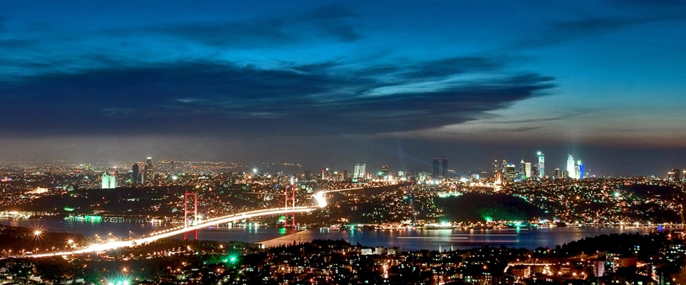
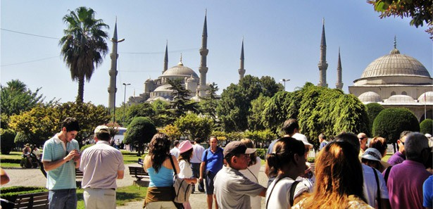

Türkiye tarihi özellikleri ile de dikkatleri üzerine çeken birülkedir. Anadolu, tarih öncesi çağlardan bu yana Hititler, Asurlar,Sümerler, Babiller ve Persler gibi birçok uygarlığa ev sahipliğiyapmıştır. Bu dönemlerden kalan eserler turizmin gelişmesine büyük katkı sağlamaktadır. Bunun yanında Türkiye, yeni ve niteliklitesisleri, geniş yelpazeli alışveriş olanakları, ihtisaslaşmış seyahatacenteleri ve havayolu şirketleri sayısının çokluğu ile önemli bir turizm merkezi haline gelmiştir.
Asya ve Avrupa kıtaları arasında bulunan Türkiye'ye ulaşım çok kolayve ekonomiktir. Türkiye, coğrafi konum itibariyle Ortadoğu'ya ve Avrupa'ya hakim bir bölge üzerindedir. Bu nedenle hem Doğu hem de Batı'dan gelen turistlerin Türkiye bir nevi buluşma noktası olmaktadır. Uçuş mesafesi olarak 2 ya da 3 saatlik bir uçuşla Türkiye'den çevredeki bütün bölgelere uçuş imkanı mevcuttur. Bu nedenle ilk planda çevre ülkelerden olmak üzere uzak ülkelerden de milli havayolumuz Türk Hava Yolları ile ülkemize hergün uçuş imkanı bulunmaktadır.
Doğu Karadeniz'in eşsiz doğasıyla tanışmadan, Uzungöl, Fırtına Deresi, Ayder Yaylası gibi kentlerini gezmeden dönmeyin.
İstanbul'daki Topkapı, Ayasofya, Etnografya gibi müzeleri gezmeden, tarihin kanıtlarına şahit olmadan dönmeyin.

İzmir'deki Meryem Ana Evi'ni, Trabzon'daki Sümela Manastırı'nı, Antalya'daki Aziz Nicholaus Manastırı'nı gezmeden dönmeyin.
